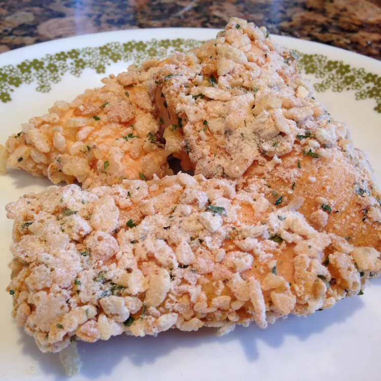

Chicken Strips

Description
Ahh fried chicken strips take us right back to our childhood.
This homemade version makes the tenders so much better and is honestly just what makes us feel better about eating them as an adult.
Make some homemade fries to go along with!
Ingredients
- ¼ cup butter, melted
- 1 ½ cups crispy rice cereal, coarsely crushed
- 2 tablespoons all-purpose flour
- 2 teaspoons salt-free seasoning blend
- 1 pound boneless, skinless chicken breast tenders
Steps
-
Preheat oven to 400 degrees F (200 degrees C).
Lightly grease a 9x13 inch baking dish.
-
Place butter in a shallow bowl.
In a separate shallow bowl, mix the crushed cereal, flour, and seasoning blend.
Dip chicken tenders in the butter, then press in the cereal mixture to evenly coat.
Arrange in the prepared baking dish. Drizzle with any remaining butter.
-
Bake 25 minutes in the preheated oven, or until chicken juices run clear.
go back